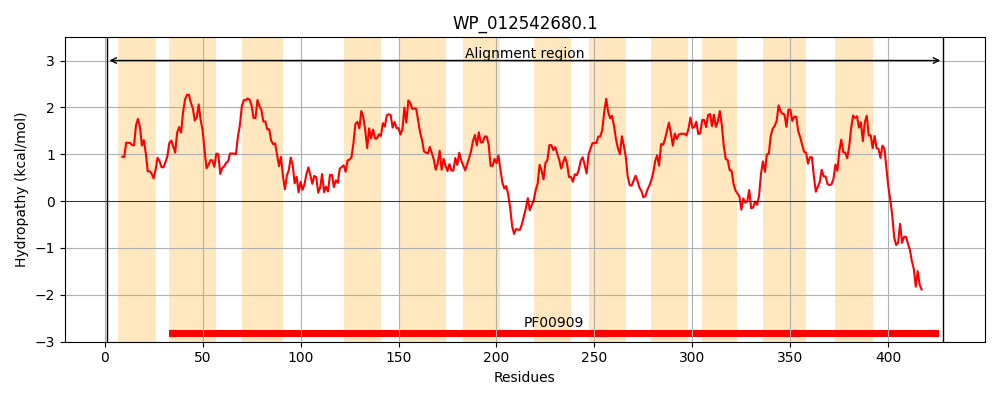
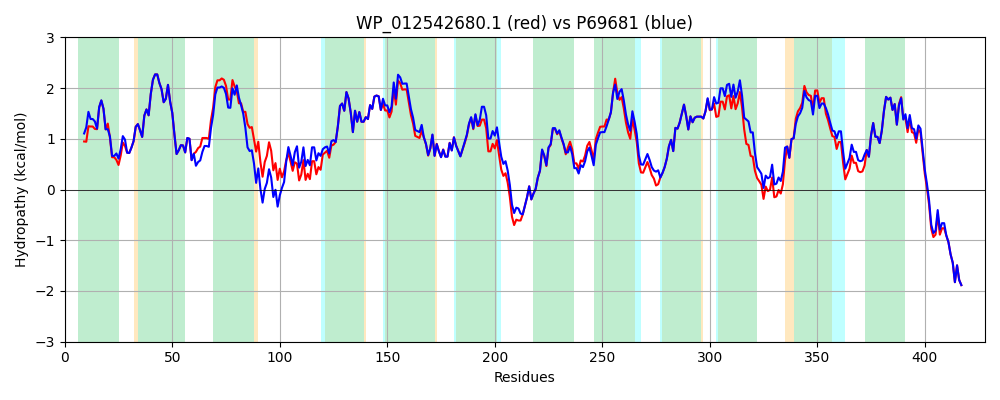

Hit Accession: P69681
Hit TCID: 1.A.11.1.1
Hit Description: gnl|BL_ORD_ID|11268 gnl|TC-DB|P69681|1.A.11.1.1 Ammonia channel - Escherichia coli.
Mach Len: 428
e:0.000000
Query TMS Count : 12
Hit TMS Count: 12
TMS-Overlap Score: 12.150000
Predicted Substrates:CHEBI:49783;ammonium, CHEBI:7434;ammonia
BLAST Alignment:
Score: 2036 , Bit scores: 788 bits, E-value: 0.0e+00, Alignment length: 428, Percentage identity: 89
Query: 1 MKMATMKSGLGALALLPGLAMAAPAVADKADNAFMMICTALVLFMTIPGIALFYGGLIRGKNVLSMLTQVIVTFGLVCVLWVIYGYTLAFGTGGSFFGSFDWVMLKNIELKALMGTFYQYIHVAFQGSFACITVGLIVGALAERIRFSAVLIFVVVWMTLSYVPIAHMVWGGGLLATHGALDFAGGTVVHINAAVAGLVGAYMMGKRVGFGKEAFKPHNLPMVFTGTAILYVGWFGFNAGSASAANEIAALAFVNTVVATAAAILAWTFGEWALRGKPSLLGACSGAIAGLVGVTPACGYIGVGGALIVGIASGLAGIWGVTALKRWLRVDDPCDVFGVHGVCGIVGCILTGIFAATSLGGVGYAEGVTMGHQLLVQLESIAITIVWSGVVAFIGYKVADMTVGLRVPEEQEREGLDVNSHGENAYNA 428
MK+AT+K+GL +LA+LPGL MAAPAVADKADNAFMMICTALVLFMTIPGIALFYGGLIRGKNVLSMLTQV VTF LVC+LWV+YGY+LAFG G +FFG+ +W+MLKNIEL A+MG+ YQYIHVAFQGSFACITVGLIVGALAERIRFSAVLIFVVVW+TLSY+PIAHMVWGGGLLA+HGALDFAGGTVVHINAA+AGLVGAY++GKRVGFGKEAFKPHNLPMVFTGTAILY+GWFGFNAGSA ANEIAALAFVNTVVATAAAIL W FGEWALRGKPSLLGACSGAIAGLVGVTPACGYIGVGGALI+G+ +GLAG+WGVT LKR LRVDDPCDVFGVHGVCGIVGCI+TGIFAA+SLGGVG+AEGVTMGHQLLVQLESIAITIVWSGVVAFIGYK+AD+TVGLRVPEEQEREGLDVNSHGENAYNA
Sbjct: 1 MKIATIKTGLASLAMLPGLVMAAPAVADKADNAFMMICTALVLFMTIPGIALFYGGLIRGKNVLSMLTQVTVTFALVCILWVVYGYSLAFGEGNNFFGNINWLMLKNIELTAVMGSIYQYIHVAFQGSFACITVGLIVGALAERIRFSAVLIFVVVWLTLSYIPIAHMVWGGGLLASHGALDFAGGTVVHINAAIAGLVGAYLIGKRVGFGKEAFKPHNLPMVFTGTAILYIGWFGFNAGSAGTANEIAALAFVNTVVATAAAILGWIFGEWALRGKPSLLGACSGAIAGLVGVTPACGYIGVGGALIIGVVAGLAGLWGVTMLKRLLRVDDPCDVFGVHGVCGIVGCIMTGIFAASSLGGVGFAEGVTMGHQLLVQLESIAITIVWSGVVAFIGYKLADLTVGLRVPEEQEREGLDVNSHGENAYNA 428 | Protein Hydropathy Plots: |
|---|
|  |  |
Pairwise Alignment-Hydropathy Plot:
|
|---|
|  |